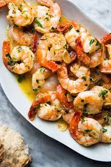

Shrimp Scampi

Descriptipon
This simple but flavorful Scampi is sure to be a big hit.
Ingredients
- 30 medium shrimp, peeled and deveined
- 2tablespoons olive oil
- 2 tablespoons butter, melted
- 1/2 teaspoon kosher salt
- 1/4 teaspoon ground black pepper
Steps
- Preheat an oven to 350 degrees F (175 degrees C).
- Toss the shrimp in a bowl with the olive oil, melted butter, garlic, salt, and pepper; set aside for 10 minutes. Arrange the shrimp in a circular pattern in a round casserole dish.
- Bake in the preheated oven until the shrimp are pink and cooked through, about 15 minutes.